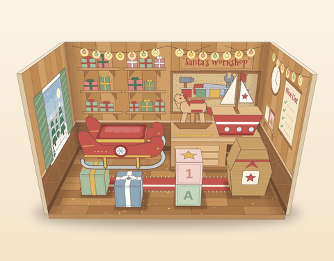
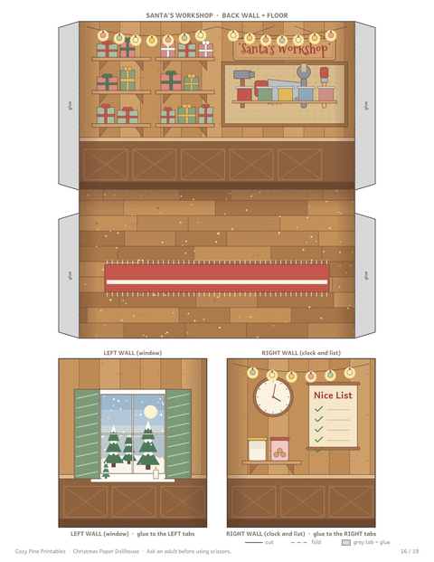
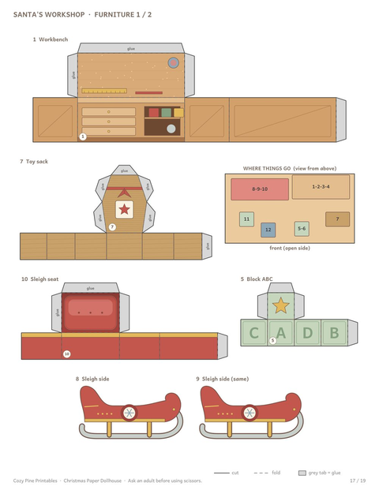
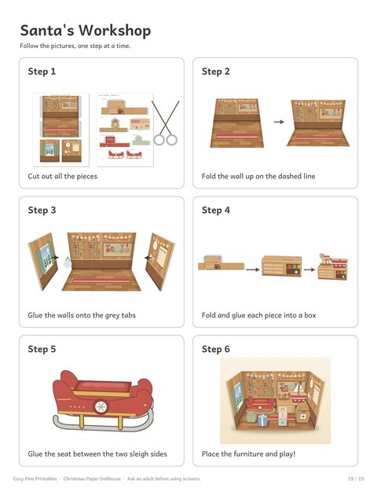
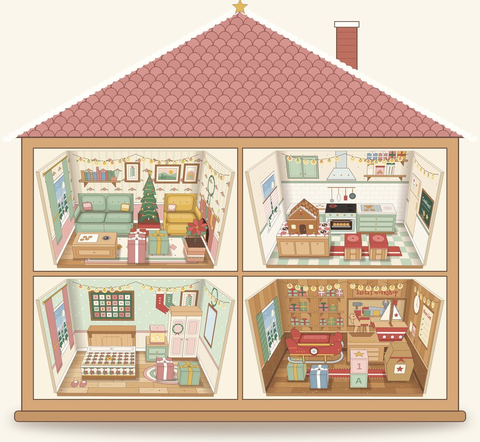
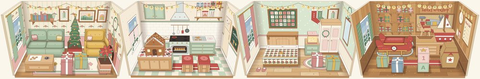
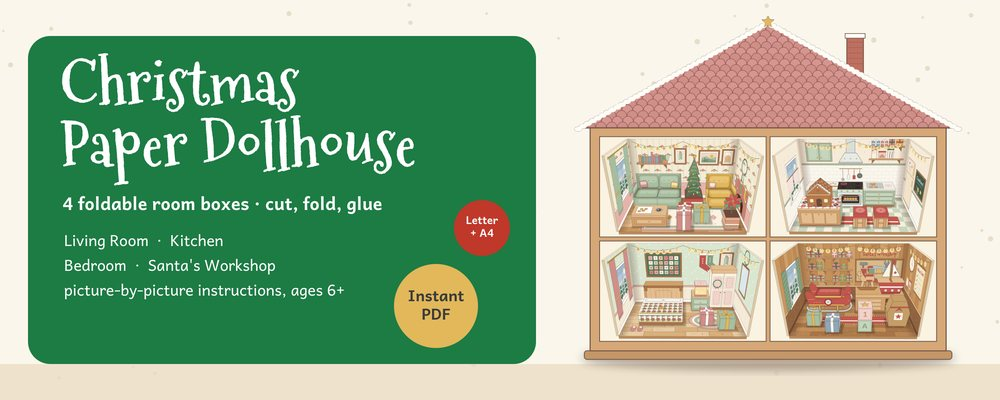

Santa's Workshop Craft for Kids
Paper toy workshop · sleigh, rocking horse, ABC blocks · picture steps · ages 6+
Santa's workshop is the room every kid wants to peek into. This printable craft turns it into a little paper room you can build yourself: a wooden workshop with shelves of wrapped gifts, a workbench, a red sleigh, a rocking horse, a toy boat, ABC blocks and a Nice List on the wall.
Santa's Workshop is one of the four rooms in the Christmas Paper Dollhouse. It comes with its own template, 12 numbered furniture pieces and a page of picture steps.
Try the dollhouse method first with the free Christmas Morning Bedroom:
⬇ Download the free Christmas bedroom room (US Letter PDF) ⬇ Download the free Christmas bedroom room (A4 PDF)Free PDF includes:
- The complete Christmas Morning Bedroom: room box template and 7 furniture pieces
- A 'how to build a room box' page and 6 picture steps
- 6 pages, US Letter or A4
Inside Santa's workshop






A Santa's workshop craft kids can play with
The workshop is a small open box, 5.4 x 2.9 x 3.3 in (13.7 x 7.4 x 8.4 cm). Fold up the walls, glue the tabs, then build the furniture: the sleigh has two matching sides with curled runners and a seat between them, the toy boat has a hull and a sail, and there are two toy blocks, one with ABC and one with 123. The workbench is the biggest piece, 2.4 in (6 cm) long.
When it is built, the play starts: elves at the workbench, gifts waiting on the shelves, the sleigh packed for the night.
Great for Christmas break and parties
It is a calm, screen-free activity for a winter afternoon. Print the workshop for one child, or all four rooms of the dollhouse so that a group builds one big Christmas house together.
The craft is designed for ages 6+, with an adult cutting out the templates and the smallest pieces. Kids fold, glue and set up the scene.
Santa's workshop comes in the full Christmas Paper Dollhouse set, together with the living room, kitchen and bedroom:
Christmas Paper Dollhouse

- 4 printable room boxes: Christmas living room, gingerbread kitchen, morning bedroom and Santa's workshop
- 39 numbered furniture pieces to cut, fold and glue, plus picture instructions for every room
- Each room is 5.4 x 2.9 x 3.3 in (13.7 x 7.4 x 8.4 cm); rooms stand side by side or stack into a house
- US Letter & A4 · 19 pages · instant PDF download
$7.00
Get the Christmas Paper Dollhouse →Tips for a smooth build
- Print at 100% ("Actual size") on cardstock, 65-110 lb (160-200 gsm), so the workshop stands up straight.
- Fold the walls first, then glue the furniture, one numbered piece at a time.
- A glue stick, a ruler for creasing and small scissors are all you need.
- Grown-ups cut the tiny pieces; kids do the folding and gluing.
Frequently asked questions
Is Santa's workshop sold separately?
No. It is one of the four rooms in the Christmas Paper Dollhouse. You can try the same method free with the Christmas Morning Bedroom.
How many pieces are in the workshop?
12 numbered furniture pieces: workbench, toy sack, sleigh (two sides and a seat), rocking horse, toy boat and sail, ABC and 123 blocks and two gifts.
What age is it for?
Ages 6+ with an adult helping with the cutting. The folding and gluing are kid-friendly with picture steps.